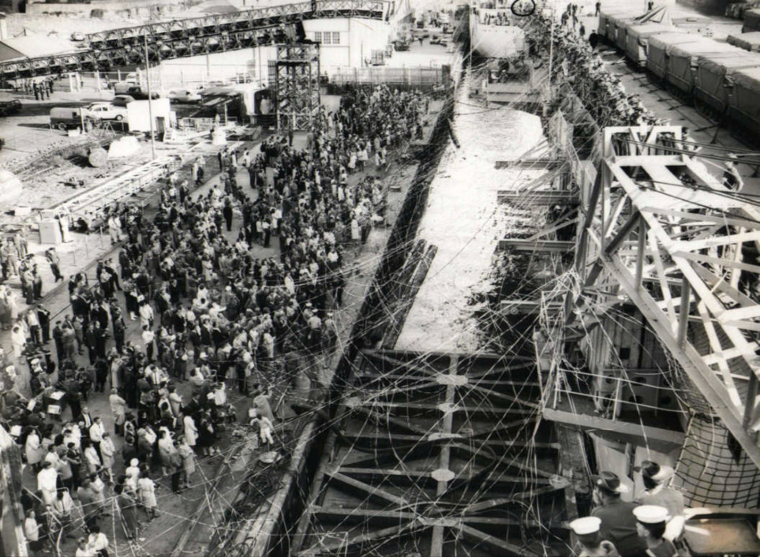

A ‘nice sea voyage’ That was the proposal put to me by my Officer Commanding, Captain Bob Skitch, as we were preparing for the departure of our unit "Detachment 1 Topographical Survey Troop" for South Vietnam in early 1966.
We had recently finished our DP1 military training at Holsworthy and the prospect of Vietnam was very much on our minds. It wasn’t until 8 March that the Prime Minister announced that the 1st Task Force of two battalions with supporting arms and services would be deployed to South Vietnam to replace the 1st Battalion Royal Australian Regiment. Our Troop was part of the Task Force – would we be going? It was some days later that Captain Skitch assembled all Troop members at Randwick and confirmed that Survey had a guernsey and read the names of the twelve members present who were to form the Detachment for Vietnam. It was a few days later that we were told that while the Detachment would be inserted by air, two members, a senior NCO and a Sapper, would be required to escort our vehicles and survey stores to Vietnam on the HMAS Sydney.

Photograph supplied by Brian Firns I wasn't sure whether this proposal of a sea voyage was subject to discussion or a polite order but in any case the idea appealed to me so I put my hand up. Sapper Brian Firns and I became the nominated escort personnel to escort two Landrovers with trailers all packed with an assortment of survey, drafting and basic reproduction equipment together with a small amount of consumable stores, on a voyage aboard HMAS Sydney to the South Vietnamese port of Vung Tau. But first we had to complete our three weeks battle efficiency training at the Jungle Warfare Centre at Canungra and that is another story. We returned to Randwick on 2 May to find preparation for our departure well under way.
The embarkation was relatively uneventful considering the apparent lack of trust between the Army and the Navy evident from time to time. Our Troop’s preparation was fairly straightforward, all stores were securely packed, labeled with our unique colour code and loaded into the vehicles and trailers which were then driven to the wharf at Woolloomooloo and placed in the care of the army movement’s staff. On the day of departure I said my farewells to my family at Randwick Barracks, as the situation down at the wharf would be somewhat chaotic and a bit traumatic for my wife and two small children. Brian and I were then driven to Woolloomooloo wharf where we boarded the HMAS Sydney and were placed in the hands of the ships army staff, processed through the administrative system and allocated our respective quarters. My living/sleeping area, called in navy terms a mess deck was a small bare room about 10 metres square which I was to share with 25 other senior NCOs. There were some lockers along one wall and several poles with hooks mounted at various heights going from floor to ceiling. Four bins were also fixed against the wall and contained rolled and tied objects which I later found out were hammocks. I was assigned a locker by a member of the crew and after depositing my few belongings went up to the flight deck to watch the procedure for the ship’s departure. Several shore patrol vehicles were unloading reluctant and inebriated crew members who were escorted on board and impounded in the brig to await subsequent disciplinary action. Other fairly ‘well oiled’ but well behaved army personnel were shepherded up the gangway including some cheerful NZ gunners from the NZ Battery which formed part of our artillery regiment.
At last the lines were cast off and we slipped away from the wharf to the accompaniment of cheers, whistles streamers and tears. We sailed down Sydney Harbour and through the Heads on our way to South Vietnam. As the land faded in the background we were summoned by loudspeakers to our mess decks for a briefing on the domestic arrangements for the voyage. By then our mess deck was filling up fast with sergeants from various corps mainly engineers, infantry and armoured who all seemed to know each other from past exercises. As there was one lone signals sergeant and I was the only survey sergeant we naturally gravitated together and compared job profiles. He was from a small "hush hush" signals unit and like myself was there to escort vehicles, trailers and equipment, assisted by a signaler who happened to be accommodated in the same mess deck as Brian Firns. Very early in the voyage it was established that the four of us played 500, so combating the tedium was not going to be a problem.
We gradually slipped into the shipboard routine which consisted of breakfast then a morning parade for all army personnel on the flight deck, where any administrative instructions were read out. Then sub-unit commanders and if required other key personnel in the sub-units were dismissed to attend to their own administration or equipment maintenance. This of course included Brian and I and the two RA Sigs so our first game of 500 for the day got away soon after. The other larger units were required to attend lectures (medical hygiene etc.) physical training and military skills revision which included live firing of weapons from the flight deck at targets thrown into the water. Our days then consisted of playing cards, reading, dodging work details and sleeping in the many nooks and crannies that can be found on a non-operative aircraft carrier. The highlight of the day was the afternoon beer issue where one large can of beer (opened) was given to each man. For the Senior NCOs one member of the mess deck would be rostered to collect the beer and bring the cans down to his thirsty colleagues to be drunk at leisure. The ORs and junior NCOs had to wait in a line while the duty NCO (usually a sergeant) would open a can and drink it to ascertain if it was cold enough. He would then open each can and distribute them individually to the troops, the theory being that they could not hoard the beer for a big splurge because it would go flat. It's the only time I have seen NCOs begging to be made duty NCO. Teetotalers naturally gained many friends during this time. The daily routine was interrupted from time to time for special events. When the ship reached the equator a canvas pool was set up for the crossing of the line ceremony where the first timers crossing the equator were initiated with red food dye and shaving cream by King Neptune. Several concerts were held featuring the ships band and a talent quest was conducted which drew out talent of various degrees of competence from the passengers. Movies were screened on deck and bingo, or tombola as the navy call it, was featured most nights in the eating area.
The days seemed to pass reasonably quickly although at the back of our minds was always the thought of where we were going and what we were likely to encounter, especially when the ship conducted an "action stations drill" of which there were several. These reminded us that this was not a leisure cruise. Finally after twelve days at sea we reached our destination. As we sailed into Vung Tau harbour the scene was of incredible activity. Numerous large ships were anchored all around the area where we moored, mainly merchant vessels and the water was teeming with small craft, barges, tugs, landing craft, ships tenders etc. Overhead, helicopters of various sizes were ferrying cargo in slings from ship to shore, an air strike was going on in the distance and the rumble of artillery and the sharp bark of small arms completed the impression of organised chaos. We packed our personal equipment and dressed in full battle gear but with empty magazines, proceeded to the flight deck where we were assigned to groups for disembarkation in small landing craft. The craft had fairly high sides and we were told to keep our heads down, so we couldn't see what we heading into. We were very apprehensive when the craft approached the shore and we felt the scrape of the keel on the sand. The ramp on the bow dropped and I am sure most of us expected to be greeted by a volley of withering gun-fire from the enemy. Instead we were faced by a row of small stalls with smiling locals offering to sell us coca -cola, Salem cigarettes and fresh peeled pineapples. There were representatives waiting from the various units that were disembarking and I was pleased to see two of our survey troop WO2 Snow Rollston and WO2 Dave Christie who had flown in a few days earlier with the rest of the troop. After a few kind words of greeting we were told that our vehicles and stores would be off loaded later so they drove us to the back beach area of Vung Tau where our troop had set up camp in the sand dunes .And so began my 12 months tour of South Vietnam, a lot of which I have forgotten but some that will remain with me forever.